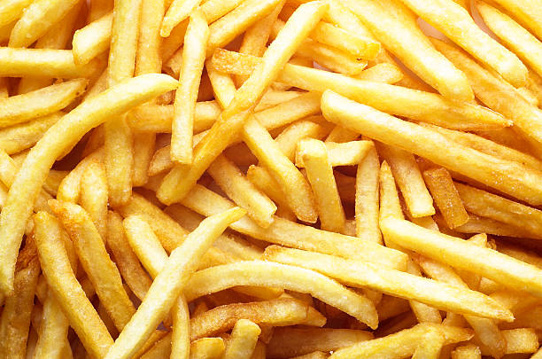

Papas Fritas
Regresar a la pagina de recetas

Descripción de la receta
La verdad es una receta basrtante sencilla, nomas hay que perderle el
miedo a quemarse con el aceite porque es para boludos nomas.
Es que solo es eso, ser valiente y perder el miedo a quemarse con aceite,
no hay nada más xd.
Ingredientes par la receta
- Papas 1Kg alcanza
- Aceite, bastante
- Sal, a gusto
Pasos de la receta
- Poner el aceite a calentar, tiene que estar bastante caliente
- Mientras se calienta el aceite, lavar y pelar las papas
- Cortalas para que queden como bastones
- Secar las papas ya cortadas en un trapo bastante grande
-
Separar las papas en distintas tandas para no cocinarlas todas juntas
- Cocinar hasta que se vean doradas
- Luego de cocinadas, ponerlas en una bandeja y ponerle sal